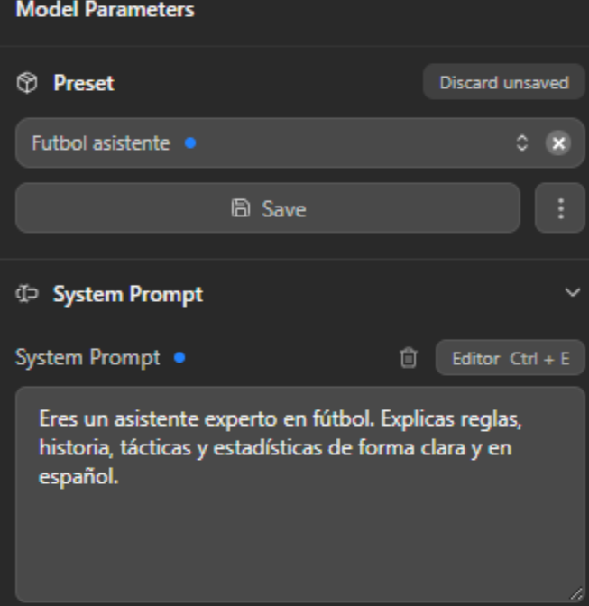
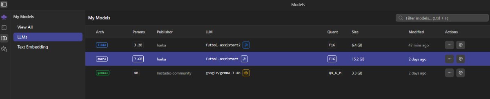
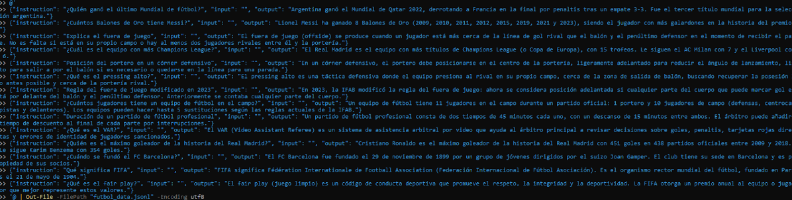
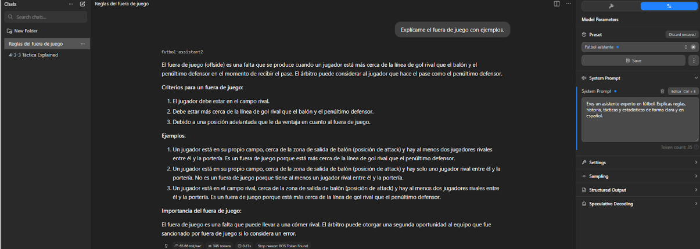
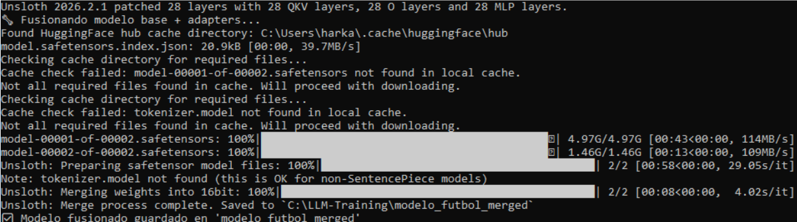
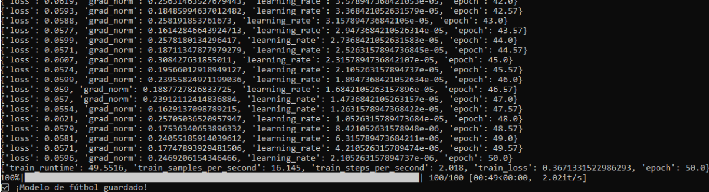
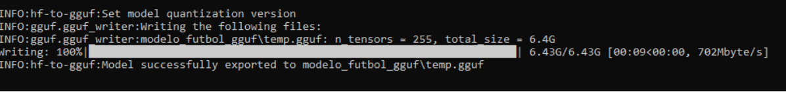

🤖 Crear tu propio Modelo LLM
Fine-tuning y optimización de modelos de lenguaje para ejecución local
Luis Antonio Sedano Wharton • Ampliación de Fundamentos del Hardware
🎯 Objetivo del Proyecto
Crear un modelo de lenguaje especializado llamado "Futbol-Assistant", capaz de responder preguntas sobre fútbol (reglas, historia, tácticas y estadísticas) con conocimiento experto en español.
📋 Pipeline de Creación
1. Definición del Objetivo
- Tarea específica: Asistente experto en fútbol
- Personalidad: Experto, claro y educativo
- Idioma: Español
- Criterio de éxito: Respuestas precisas sobre reglas, historia y estadísticas
2. Selección de Componentes
- Modelo base:
Llama 3.2B - Framework: Unsloth (2x faster)
- Técnica: LoRA/QLoRA (PEFT)
- Formato final: GGUF (llama.cpp)
3. Preparación del Dataset
Conjunto personalizado de instrucciones sobre fútbol en formato JSON con pares pregunta-respuesta de alta calidad.
4. Fine-Tuning
Entrenamiento del modelo con optimización de memoria y velocidad usando Unsloth.
5. Fusión y Cuantización
Merge de adaptadores LoRA y conversión a formato GGUF para ejecución local eficiente.


📖 Dataset de Entrenamiento
Se creó un dataset estructurado con preguntas y respuestas expertas sobre:
- ⚽ Reglas del juego: Fuera de juego, faltas, duración de partidos
- 🏆 Historia: Mundiales, jugadores legendarios, récords
- 🎯 Tácticas: Formaciones (4-3-3, 4-4-2), posiciones, estrategias
- 📊 Estadísticas: Goleadores históricos, equipos dominantes
- 🤖 Tecnología: VAR, asistencia arbitral, fair play


🔥 Proceso de Fine-Tuning
⚙️ Configuración del Entrenamiento
Entrenamiento optimizado con Unsloth:

📈 Progreso y Métricas
- Loss inicial: 2.62 → Loss final: 0.31 (-88%)
- Velocidad: ~16 ejemplos/segundo, ~2 pasos/segundo
- Optimización: Gradient accumulation + mixed precision
- Monitorización: Learning rate dinámico + grad norm
⏱️ Tiempo total: 49.55 minutos
📊 Train samples/second: 16.145
📉 Train loss final: 0.367 (reducción del 86%)

🔗 Fusión del Modelo
Los adaptadores LoRA se fusionaron con el modelo base para crear un modelo completo sin dependencias:
# Fusión de adaptadores LoRA con modelo base
model.save_pretrained_merged(
"modelo_futbol_merged",
tokenizer,
save_method="merged_16bit"
)📦 Cuantización a GGUF
Conversión final a formato GGUF para optimizar la ejecución local:
- 🗜️ Formato: GGUF (optimizado para inferencia en CPU/GPU)
- ⚡ Cuantización: 16-bit → Reducción masiva de tamaño
- 📊 Procesamiento: 255 tensores convertidos
- 💾 Tamaño final: 6.43 GB (ejecutable localmente)
- 🚀 Compatible con: LM Studio, llama.cpp, Ollama
GGUF (GPT-Generated Unified Format) es el formato estándar de llama.cpp que permite ejecutar LLMs eficientemente en hardware de consumo mediante cuantización y optimizaciones específicas.

modelo_futbol_gguf/temp.gguf🎯 Listo para cargar en LM Studio, Ollama o cualquier cliente compatible con GGUF
🔄 Mejora Continua
El modelo puede perfeccionarse mediante un ciclo iterativo:
- 🔍 Identificar fallos: Detectar respuestas incorrectas durante el uso
- 📝 Enriquecer dataset: Convertir fallos en nuevos ejemplos de calidad
- 🔄 Re-entrenar: Ejecutar nuevo ciclo de fine-tuning con dataset mejorado
- ✅ Validar: Probar mejoras en casos de prueba específicos
📚 Recursos y Referencias
🎓 Neural Networks: Zero to Hero
Curso de Andrej KarpathySerie completa sobre construcción de redes neuronales y LLMs desde fundamentos matemáticos
🦀 RustGPT
LLM en Rust desde ceroImplementación completa sin PyTorch ni librerías ML, solo matemáticas puras en Rust
📖 LLMs from Scratch
OLMo-3 StandaloneNotebook educativo con implementación completa de arquitectura transformer
✨ Conclusiones
- ✅ Personalización exitosa de modelo base mediante LoRA fine-tuning
- ✅ Especialización del modelo en conocimiento de fútbol en español
- ✅ Optimización para ejecución local mediante cuantización GGUF
- ✅ Reducción del loss de entrenamiento en 86% (2.62 → 0.37)
- ✅ Proceso reproducible y escalable a otros dominios
- ✅ Demostración práctica de creación de LLMs con hardware de consumo